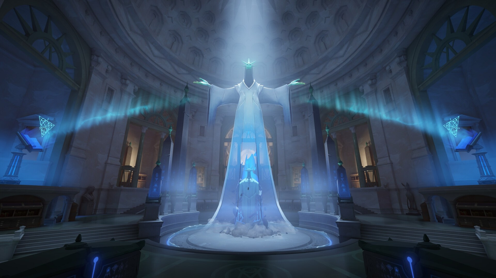
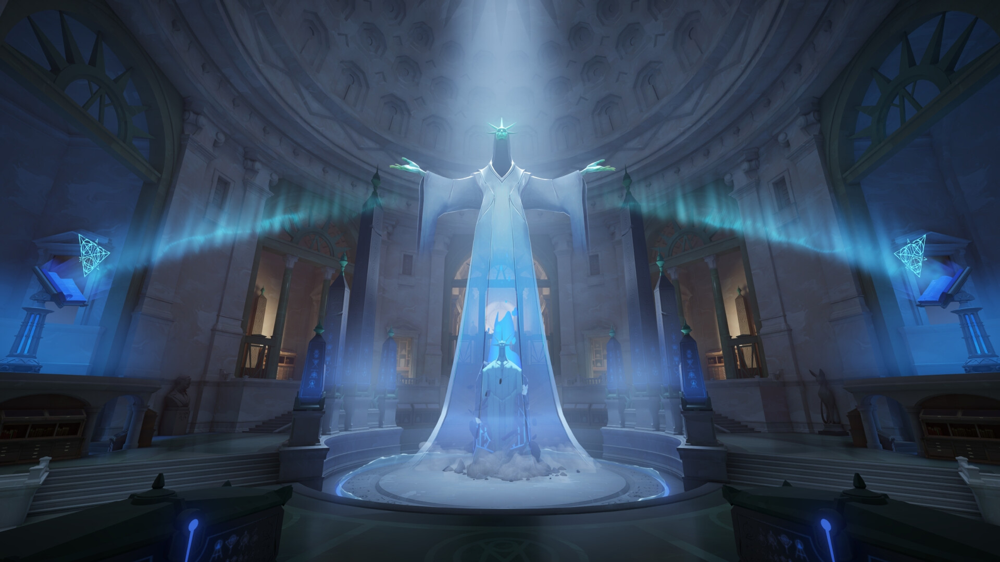
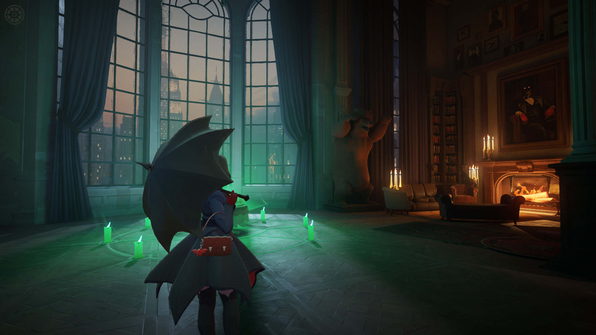

The resolution goes to video.txt and your launch options. Your GPU driver does the stretch, so the image fills the whole panel.

Skips the intro video when the game starts.
Render resolution from the Resolution tab.
Frame cap from the Balanced preset: 165 Hz minus 3.
Vulkan renderer instead of DirectX 11. Test both if you stutter.
High process priority. Rarely helps, can add stutter on 6-core CPUs.
video.txt · launch options · shader cache cleared
gameinfo.gi
video.txt · launch options
Field of view re-applied on launch
Everything, before the first change
| Setting | Now | In backup |
|---|
Changes: video.txt graphics values, gameinfo.gi (only for field of view above 90°), the launch options you paste, and Windows Game Mode, GPU scheduling and power plan.
Never: the game process, its memory, game binaries or anti-cheat. Nothing is injected.